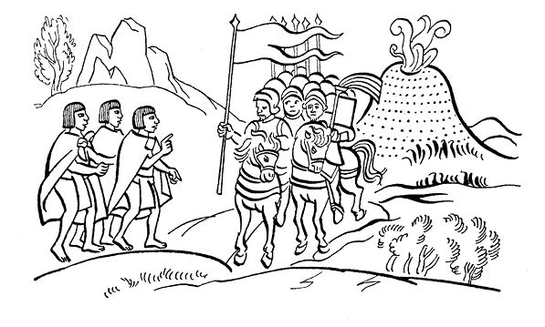
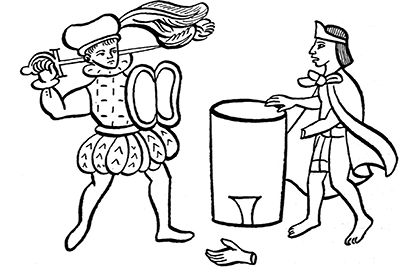

第六章 送来新礼物，特斯卡特利波卡神显于
圣波波卡特佩特尔郊区
导 言
保存在《佛罗伦萨抄本》中的萨阿贡实情提供者的下列片段叙述了两件十分有趣的轶事。乔卢拉大屠杀后，征服者在特拉斯卡拉人的陪同下继续向墨西哥谷地挺进。在被墨西卡人称作“老鹰木墩”的火山附近蒙泰古祖玛派来以辛瓦克波波卡特辛为首的新使团。他们在路上遇到征服者。在把诸多金器交给西班牙人时墨西卡人兴致勃勃地向我们描述了这些外来人的反应：“他们脸上露出了笑容……像猴子似的举起黄金……像饿猪一样渴望黄金……”
接着，叙述了辛瓦克波波卡特辛试图冒充蒙泰古祖玛的把戏，被识破后，又来了新使者。他们中来了更多的巫师，企图阻止征服者继续前进，但是后者并没有停下脚步。
一个神秘的人伪装成醉汉出现在使者的面前，他预言墨西哥即将被毁灭，这位神秘人物还做出各种奇异的动作，使新魔法师隐退。这些魔法师以为是特斯卡特利波卡在显圣，便回到墨西哥-特诺奇蒂特兰向蒙泰古祖玛禀报所见之事。这位伟大的墨西卡特拉托阿尼更加沮丧，他只好同意征服者前来。
征服者接受金器礼物时的反应
蒙泰古祖玛选派了使团，后来他对被派的高官做了说明：以辛瓦克波波卡特辛为首，率领众多高官代表他，前往伊斯塔科特佩特尔辖区的波波卡特佩特尔郊区，即“老鹰木墩”地区面见西班牙人。
他们赠送西班牙人各种黄金制品：几面克查尔羽毛和黄金制旗子，还有多串金项链。当把这些礼物给他们的时候，这些人（西班牙人）脸上露出了笑容，高兴得手舞足蹈。他们就像猴子似的举起金器，然后又高兴地坐下。完全像是换了一个人，个个心花怒放。
他们渴望得到黄金，见了黄金就浑身舒服，就像饿猪贪食那样，对黄金贪得无厌。
外来人一把夺过金旗，从一边挥舞到另一边，然后又左右端详不已。这些人像野蛮人一样讲话，他们用的本来就是野蛮的语言。
辛瓦克波波卡特辛假称自己就是蒙泰古祖玛。
当他们看到辛瓦克波波卡特辛时，问道：“此人可是蒙泰古祖玛？”

陪伴在西班牙人身边那些个滑头滑脑、溜须拍马的特拉斯卡拉人和森波阿拉人抢着说：“他不是，我们的大人。他是辛瓦克波波卡特辛，是蒙泰古祖玛的代表。”
西班牙人问辛瓦克波波卡特辛：“难道你是蒙泰古祖玛？”
回答是：“是的，在下便是蒙泰古祖玛，您的仆人。”
然而，西班牙人却说道：“滚开！你为什么要欺骗我们？知道我们是什么人么？
你别想骗我们，别想捉弄我们；你别想唬我们，别想蒙我们；你别想诓我们，别想把我们的眼蒙住。
你别想在我们的眼前念咒，蒙蔽我们的眼睛；你别想弄瞎我们的眼睛，别想使我们的眼睛枯萎；你别想使我们变成斜眼，别想往我们的眼睛上涂烂泥；你不是……蒙泰古祖玛在那里！他逃不掉，他躲不过我们的眼睛。
他能逃到哪里？难道他是会飞的鸟？难道在地上他有独特的道路？难道他能在什么地方把山凿出一个洞自己钻进去？
我们肯定能看到他，他躲不过我们的眼睛。我们肯定能听到他讲话，他的嘴唇翕动，我们就能听到。”
再也没有比西班牙人更能对蒙泰古祖玛表示蔑视的人了，他们把他看得一钱不值。使者的欢迎表示和问候以失败告终。
从此，西班牙人便沿着大道笔直向前。
蒙泰古祖玛派遣更多的巫师
蒙泰古祖玛又派了一拨使者：他们是巫师、魔法师甚至还有祭司。这些人和上次的人一样前去“迎接”西班牙人，同样，他们什么也没做成。没能伤害西班牙人的眼睛，没能控制住这些外来人，实际上也根本控制不住。根本连控制都谈不上。
他们只是在半路上遇到了一个醉鬼。醉鬼有备而来，使者们措手不及。他们打量着醉鬼，只见他穿得像个查尔克人：披着一件传说中那么漂亮的查尔克坎肩。他看上去像是喝醉了，一副烂醉如泥的样子，尽量使自己表现得很粗鲁。他的胸前挂着八根绊根草编织的绳子。
特斯卡特利波卡神显圣
那个查尔克人突然出现在西班牙人面前，差一点儿与他们撞了个满怀。只见他转身对着墨西哥人问道：
“你们为什么要到这里来？你们想要干什么？蒙泰古祖玛到底想要做什么？难道他现在还没清醒过来吗？难道他现在仍是个不幸的胆小鬼？
他犯了那么多错误：把他的臣民派到那么远的地方，杀了那么多人。在那里人与人相互殴打，相互提防，相互厮杀，相互捉弄。”
听了他的话，使者们赶紧向他求饶，还为他准备了一个绊根草制的移动小祭坛……想去讨好他，但是晚了，因为他已消失得无影无踪。
尽管他们白白为他做了安排，白白为他准备了移动祭坛，但从他的嘴里无法得到更多的神谕。他像是远远地冲着他们说话，狠狠地斥责了他们，使他们感到恐惧。神谕好像对他们说：
“为什么你们还徒劳地跑来这里阻止他们？墨西哥马上就不存在了！一切都将永远消失！”
“赶快离开这里！这里不是你们待的地方！快朝墨西哥的方向看看，该发生的事情在那里已经发生了！”
他们赶紧向墨西哥方向张望，那里所有的庙宇在着火，房子在燃烧，祭司学校和墨西哥的所有建筑都被大火吞噬。一切都呈现出战争的残象。
巫师们见到这一切心就像要跳了出来，不知如何是好。他们连话都说不清了，好像被什么东西卡住了喉咙。他们说：
“我们不要看这些东西，应该看这些景象的人是蒙泰古祖玛。他应该看到我们现在看到的东西！……”
“那个查尔克人不是一个普通人，他是年轻的特斯卡特利波卡神……”
所以，他能立刻消失得无影无踪，使者们再也看不到他了。
使者、巫师和祭司等人再也不去出迎西班牙人，不再继续前进。他们从那里返回墨西哥，向蒙泰古祖玛禀报。路上他们碰到了由辛瓦克波波卡特辛率领的第一批人，与他们会合。
使者们回来向蒙泰古祖玛禀报了所发生的事情，以及他们的所见所闻。
蒙泰古祖玛垂头丧气
蒙泰古祖玛长时间低头不语，显得垂头丧气。接着他只说了下面的话：
“有什么办法呢，我勇猛的战士们。已经到了这个地步。我们这是咎由自取呀！……难道还有什么大山让我们可以上去？我们一定能躲藏吗？我们是墨西哥人，我们难道真的要为国捐躯，为墨西哥祖国增添荣誉？
男女老少，尚不懂事的孩子们，哪里是你们逃生之地？但是……没有办法……怎么办？……没有路可走了。怎么办？到哪里去？……我们是咎由自取啊！……不管怎么样，不管愿意不愿意，我们只能有这样的下场。”
